Export for manufacturing, and in English
The KiCad project and the JLCPCB bill of materials come from the schematic, with a sixteen-step guide. Kirchi is also available in English.
 Kirchi
KirchiFree, offline circuit simulator
Watch the voltage on every wire and the signal on a four-channel oscilloscope while it runs. Open your circuits from Proteus, LTspice, KiCad or Falstad. In English or Spanish, with no internet and no account.
Trailer
Nothing loads from YouTube until you press play.
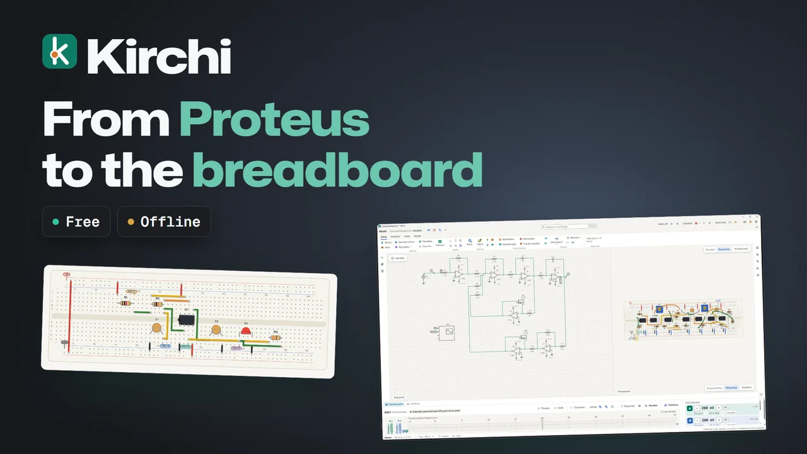
Watch the trailerVersion by version
The KiCad project and the JLCPCB bill of materials come from the schematic, with a sixteen-step guide. Kirchi is also available in English.
Boards of 830, 400 and 170 points. With right click, “Build breadboard” and “Build schematic” match the two views, and each hole shows whether the part fits, does not fit or shorts.
Proteus 8 and 9, LTspice, KiCad 7 to 9, Falstad and SPICE, with a report of what was approximated.
Light, temperature and position sensors with their live knob, MSI logic and the data of every part: package, pins and datasheet.
Real-time simulation with colored voltages, oscilloscope, multimeter and generator, and analysis with ngspice.
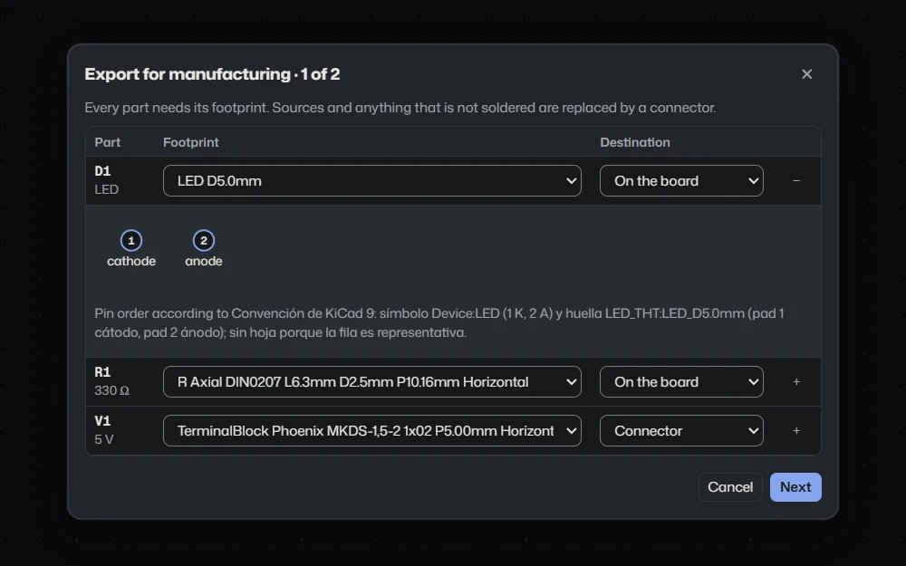
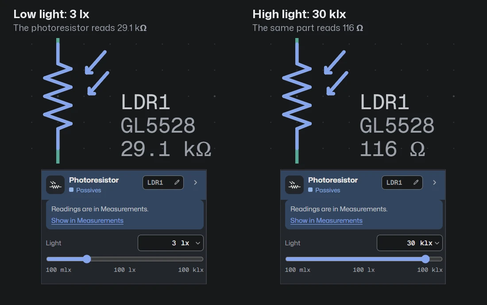
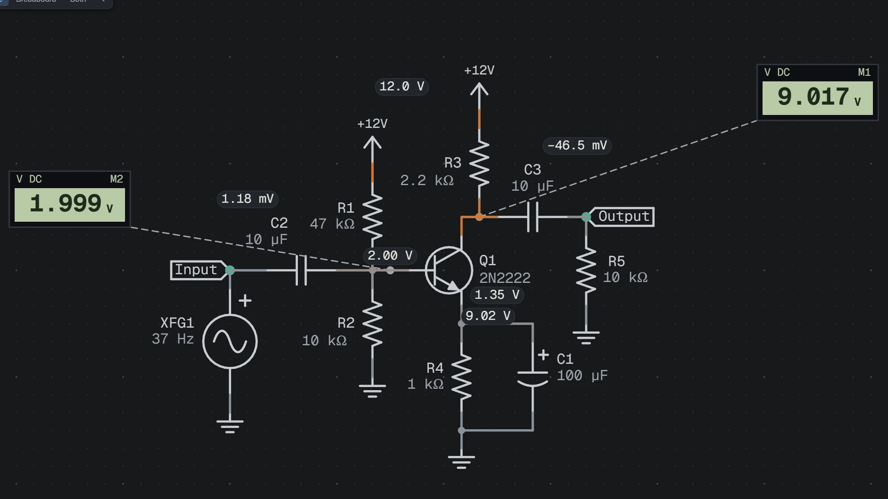
Free, no account, and everything happens on your computer.
Day to day
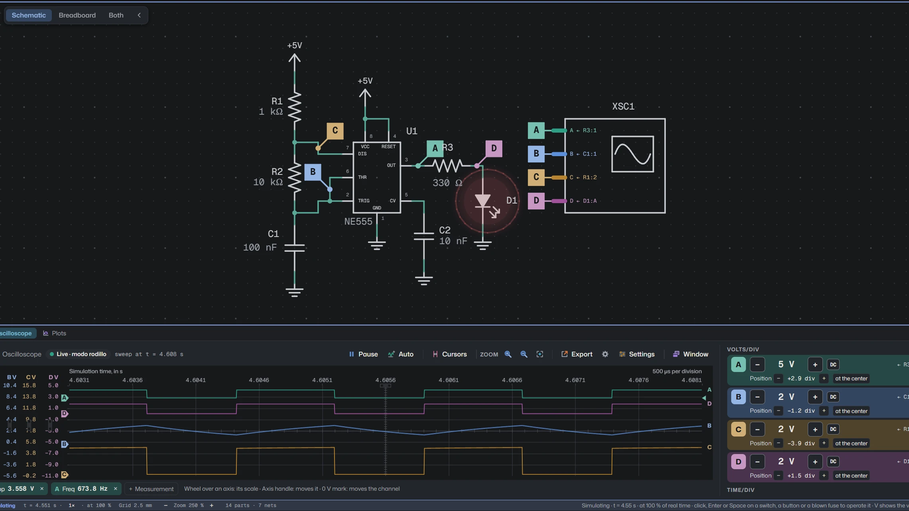
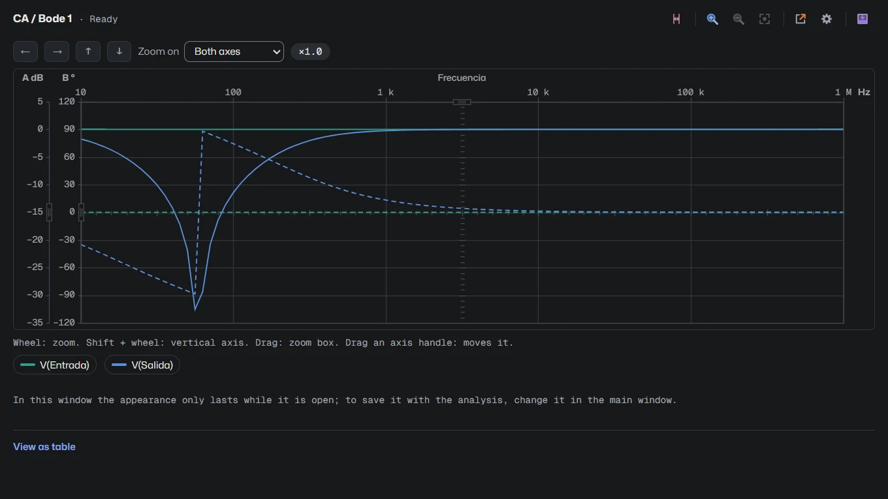
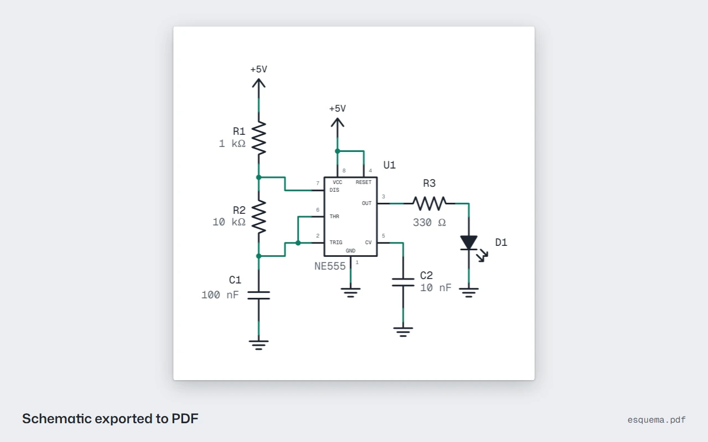
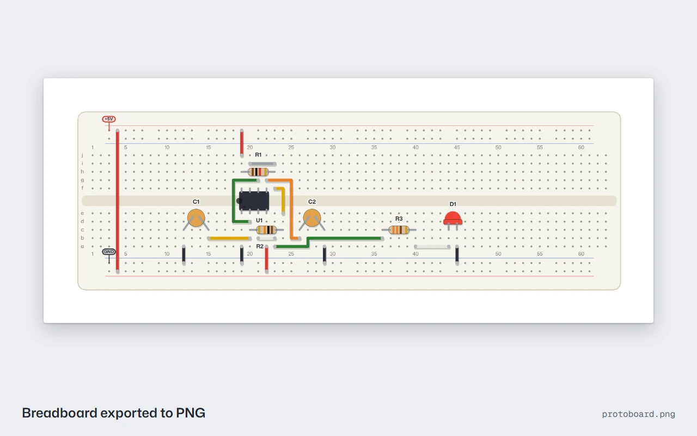
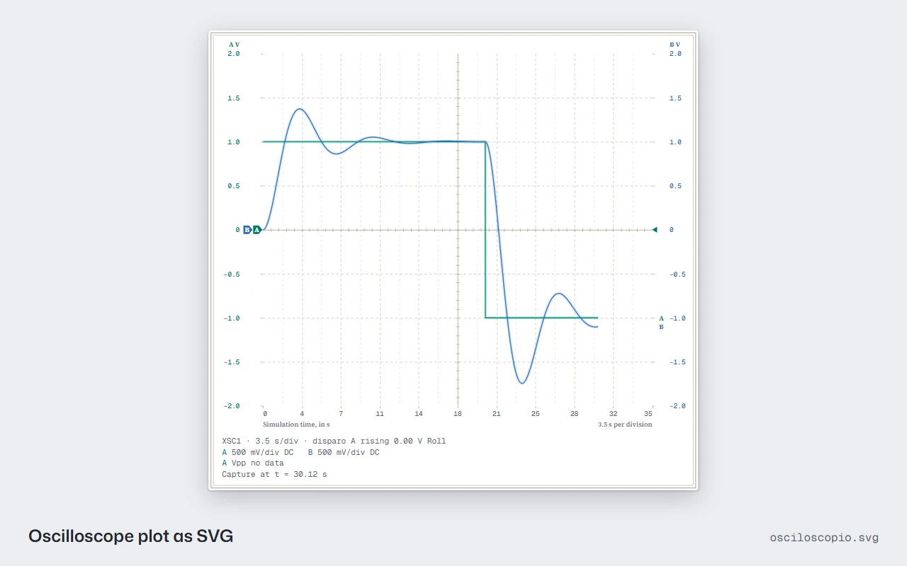
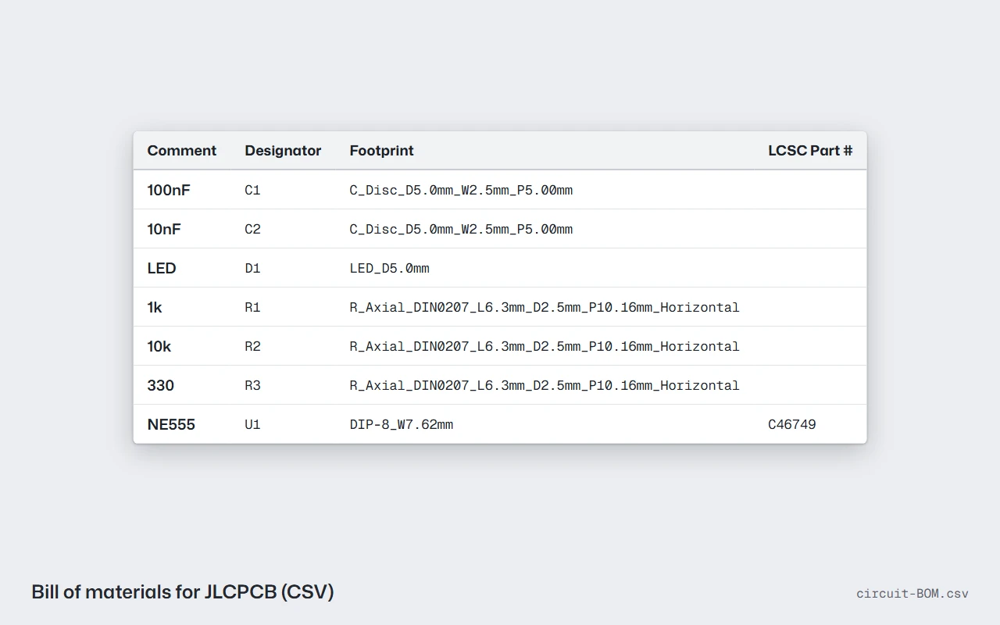
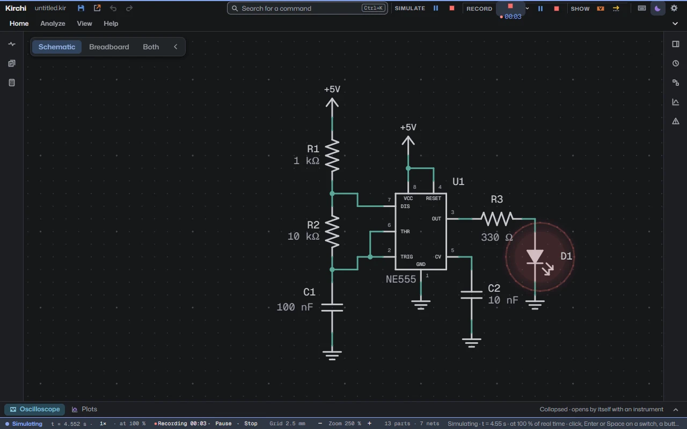
The slides change by themselves every 4 s while this step is active. Click or press a key to stop them.
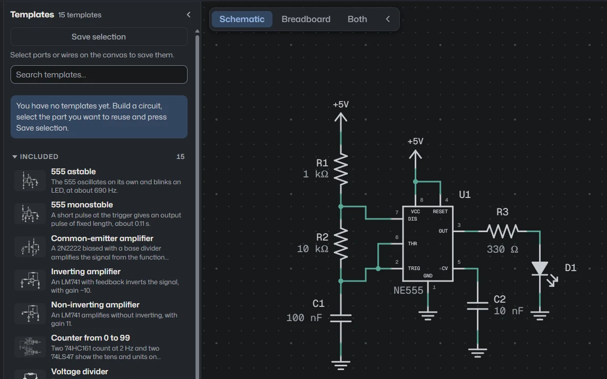
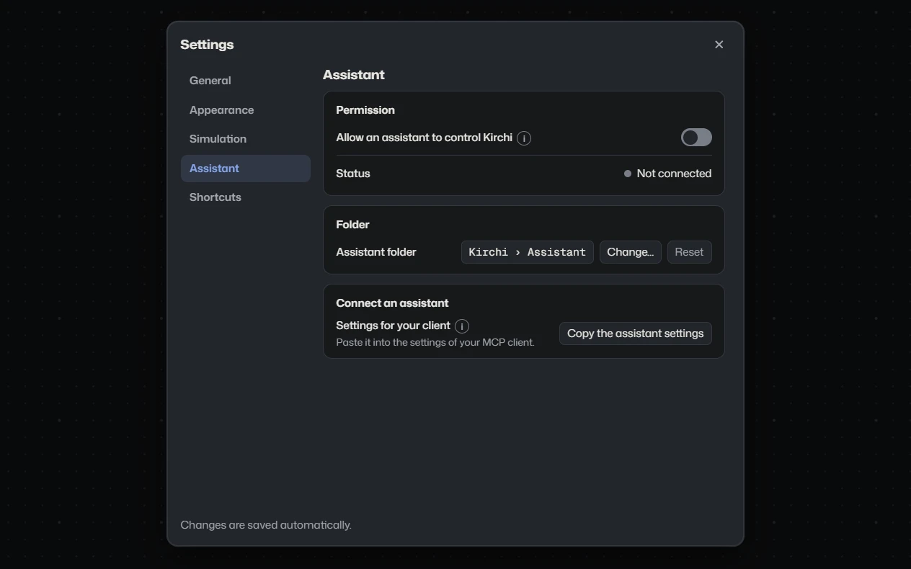
Wires are colored by voltage and current moves through every branch. Eight speeds, from ×10 to ×0.001.
Multimeter, four-channel oscilloscope and, with right click › Measure, probes on any wire.
Bode, Fourier and transient, with cursors and ranges you can type.
Six calculators show the equation with your values, pick commercial values and place the circuit.
Record the Kirchi window as MP4, with pause and with or without a microphone, to explain a circuit or hand in a lab practice.
Schematics and plots as PNG, SVG and PDF, and the window as MP4 video.
Fifteen circuits ready to simulate, from the voltage divider to the 555.
An assistant like Claude can build, simulate and measure in Kirchi through the MCP protocol. It comes off and everything happens on your computer.
The Windows installer weighs less than 100 MB and a circuit with a thousand parts open uses less than 350 MB of memory. It needs no internet and no account.
Free and no account. Choose your system.
The Microsoft Store installs and updates it by itself.
The installer is not signed with a paid certificate: SmartScreen warns about an unknown publisher. Click “More info” and “Run anyway”. The portable version runs without installing.
Drag Kirchi to Applications.
The app is not signed by Apple. The first time, right-click Kirchi › Open. If macOS cannot verify it, open System Settings › Privacy & Security and click “Open Anyway”. If it says the app is damaged, run xattr -cr /Applications/Kirchi.app in Terminal.
The .deb package is for Debian and Ubuntu.
The AppImage needs execute permission: chmod +x Kirchi-*-Linux.AppImage.
The links go to the latest file published on GitHub. If they do not load, the releases page has all the files.
Voluntary support
Kirchi is free and you can use all of it without paying anything. If it is useful to you, you can contribute so it keeps being maintained.
Your contribution pays for time to maintain Kirchi and build new versions, and for services it may need, such as cloud features in the future.
Choose how to contribute
Each provider charges its own fees and handles your data under its own terms. Kirchi does not receive or store your payment data.
Kirchi is free to use under its terms of use: you may share the official installers without charging for them, but not sell it or distribute modified copies. Versions up to 3.0.0 were published under MIT and 3.1.0 under Apache 2.0. Third-party components keep their own licenses.
Analyses are solved by ngspice 47, which Kirchi runs as a separate program, in its own process and without linking it. It is built from the official source, unmodified, and ships with its license. ngspice combines several: the simulator is modified BSD, KLU and numparam are LGPL, OSDI is Mozilla Public License 2.0, sparse is MIT-style, XSPICE is public domain and the “table” code model is GNU GPL 2 or later.
Those licenses require that whoever receives the binaries can obtain the source code. Each Release publishes Kirchi-X.Y.Z-fuentes-de-terceros.zip, with the code of ngspice 47 and of the faer crate (which includes parts under MPL 2.0), along with their SHA-256 sums.
The interface runs on Electron, which includes Chromium. The notices for Electron and Chromium, and the licenses of every interface and engine library, ship with the app and are shown in “About”.
Mona Sans, Geist Mono and Source Serif 4, under the SIL Open Font License 1.1, the same ones Kirchi uses. Notices and texts: Mona Sans, Geist Mono and Source Serif 4.